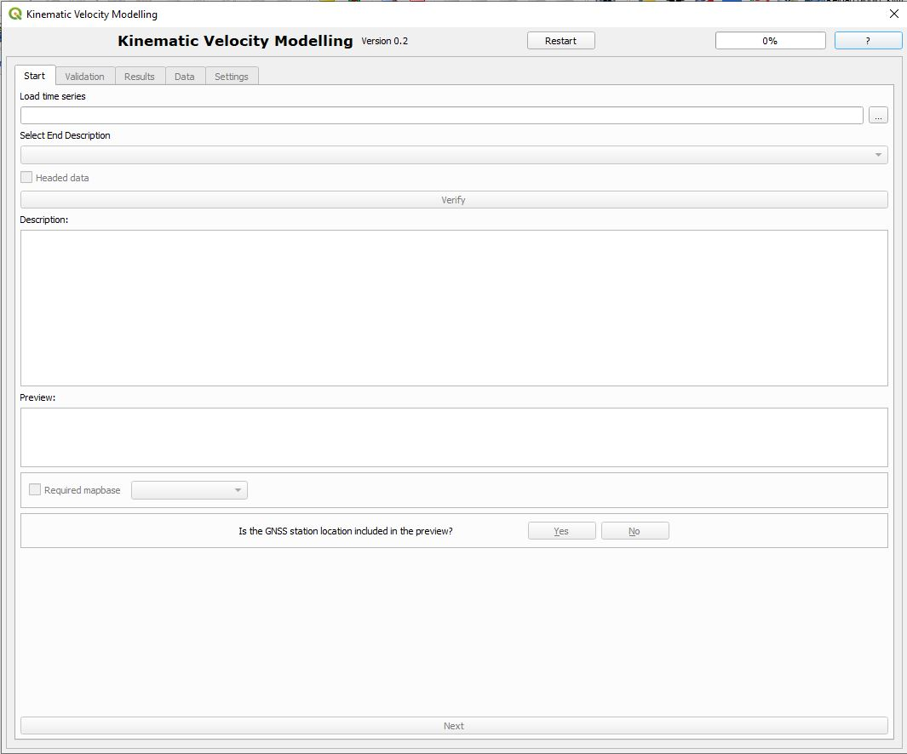
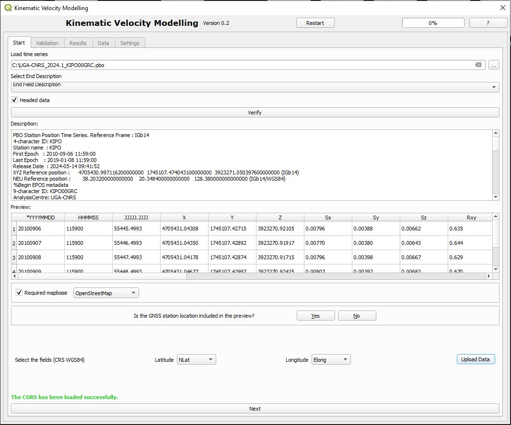
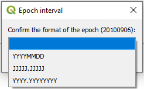
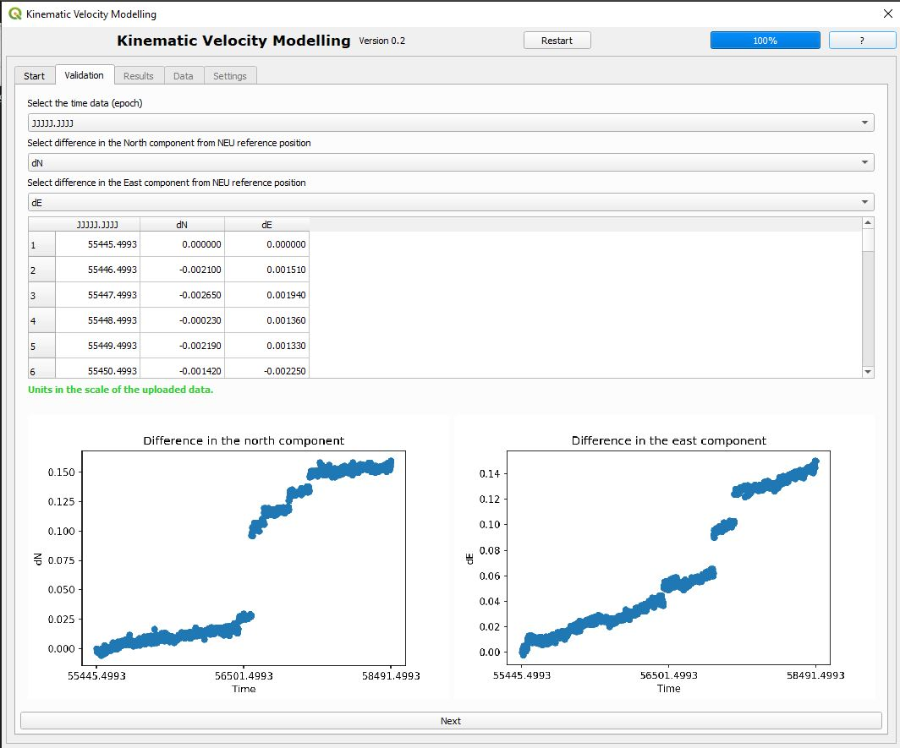
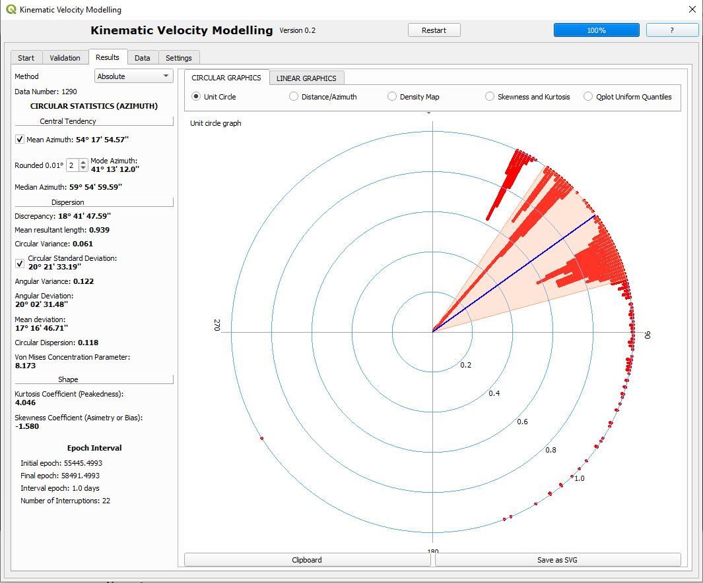
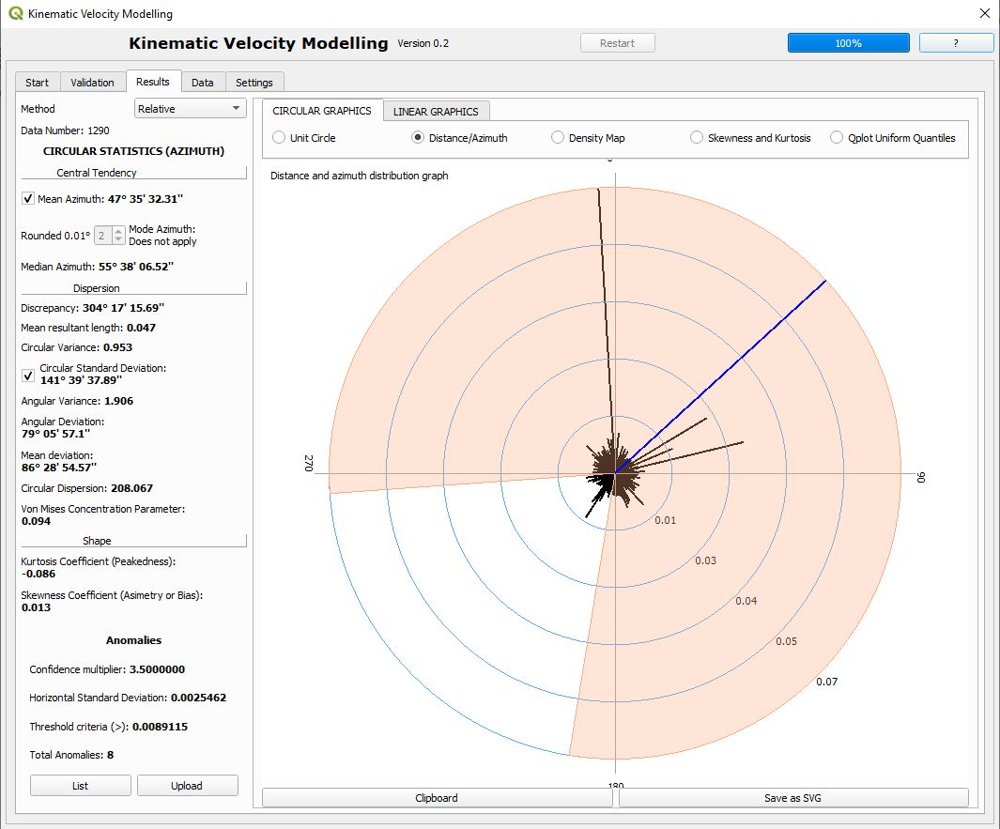
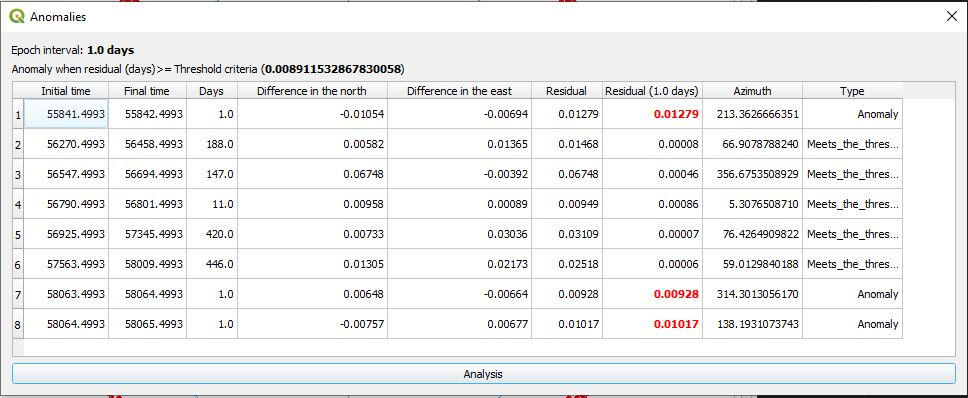
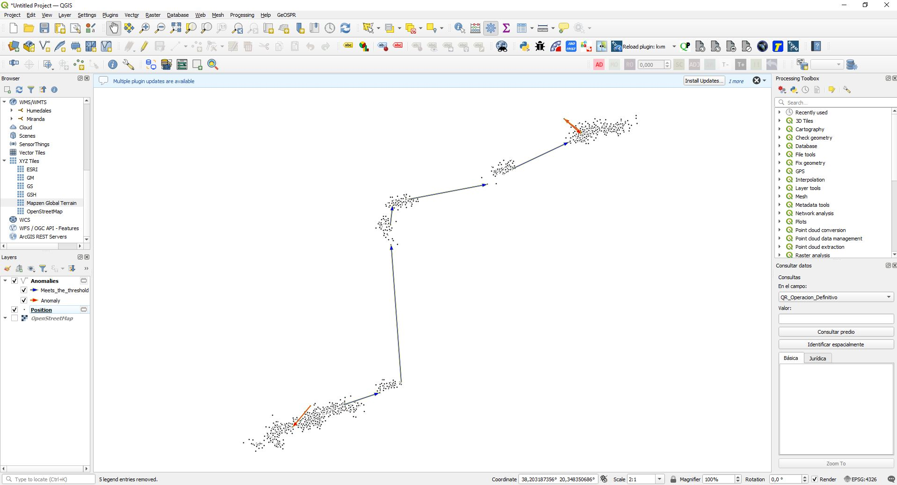
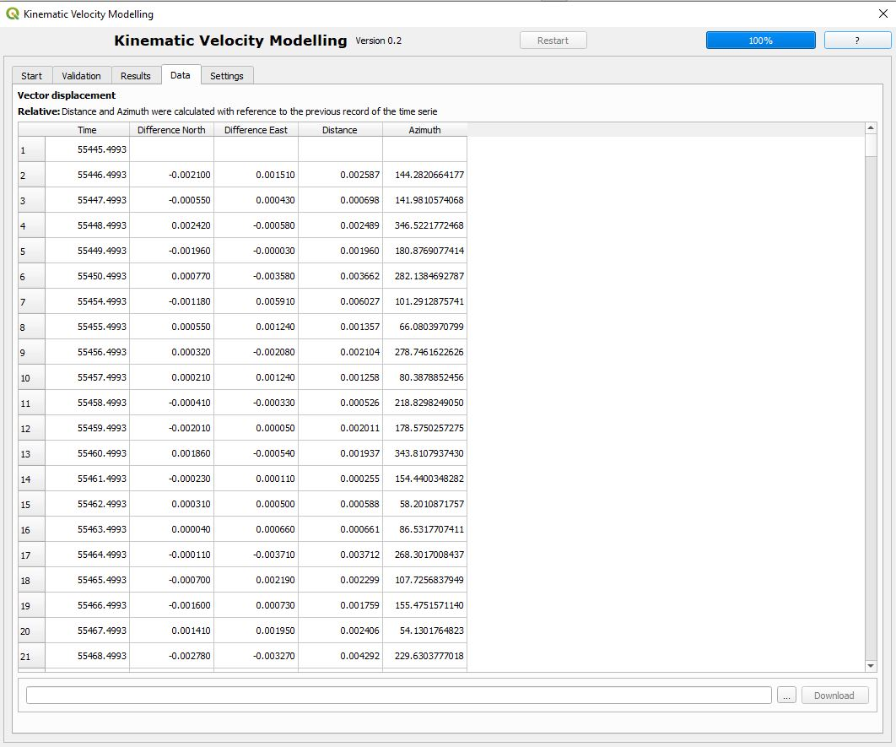
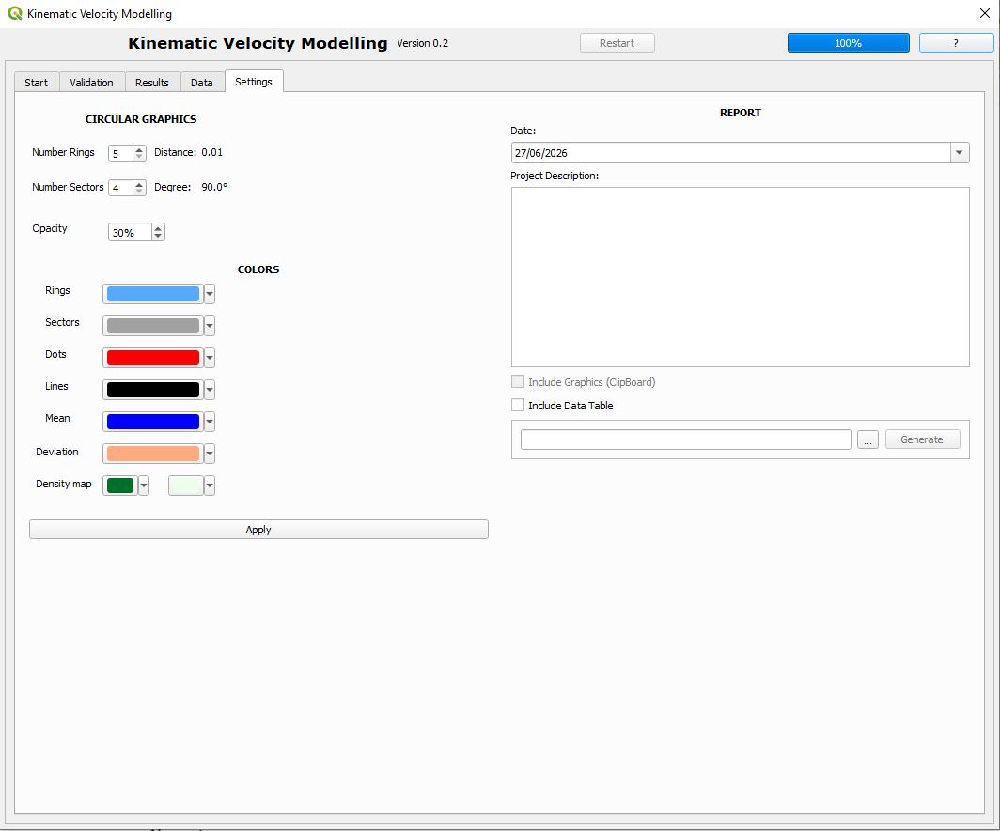

1. Introduction
The KVM plugin is a QGIS extension that enhances visualisation and kinematic velocity modelling of GNSS Continuously Operating Reference Stations (CORS) observations directly within QGIS.
A complementary method using circular statistics is employed to assess horizontal displacement as a vector characterized by magnitude and azimuth. KVM supports PBO and NEU formats and converts displacement data (North and East components) into polar coordinates (distance and azimuth) to calculate circular metrics. Circular statistics offer a robust and insightful framework for analysing GNSS CORS station time series by allowing the interpretation of horizontal displacements as vector processes.
This guide describes the complete workflow, from loading time-series data to generating charts and exporting the final outputs.
2. Main KVM interface
Panel Overview
The main KVM panel is usually divided into several sections:
- Input time series and parameters.
- Validation options.
- Visualisation area (results and chart).
- Settings.

Figure 1. General layout of the KVM plugin panel.Loading the Time Series and Input Parameters
Use the drop-down to select the time series file, the plugin allows: .PBO, .NEU, and .TXT formats.
Next, specify the row where the file description or header section ends (for example: End Field Description, # -----------, etc.).
If the time series contains column headers, enable the corresponding checkbox.
Use the Verify option to preview the loaded data. Adjust the parameters as necessary until the time series is displayed correctly.
The plugin also allows loading a base map from different providers (for example: OpenStreetMap, Google Maps, Bing Satellite, ESRI, etc.).
Indicate whether the time series includes the CORS position for each record:
- Select YES if latitude and longitude are included, and specify the column names.
- Select NO if coordinates are not included. In this case, the plugin allows the CORS station to be selected from a preloaded list (solution for GPS week 2237, day 6, CDDIS).

Figure 2. Loading time series and input parameters.Control buttons
- ...: Load the time series file.
- Verify: Check that the file has been loaded correctly and that the description and data are properly separated.
- Yes / No: Indicate whether the time series contains CORS coordinates.
- Upload data: Display all records in the QGIS interface.
- Next: Proceed to the next step.
3. Validation
Selecting Time Data (Epoch)
Select the column containing time information (for example: year-month-day (YYYYMMDD), Julian day (JJJJJ.JJJJJ), or decimal year (YYYY.YYYYYY)).

Figure 3. Epoch format.Dates are automatically converted to astronomical Julian Day format.
Selecting North Component Differences
Select the column containing the differences in the North component relative to the NEU reference position.
Selecting East Component Differences
Select the column containing differences in the East component relative to the NEU reference position.
The KVM plugin automatically generates a Cartesian representation of the North/East differences and displays the data in a tabular format.

Figure 4. Validation menu.Control buttons
- Next: Proceed to the next step.
4. Results
Method Selection
Two analysis methods are available to analyse the time series information:
- Absolute Method: Each recorded position is compared with the initial position at epoch zero or the selected reference epoch.
- Relative Method: Each recorded position is compared with the position at the immediately preceding epoch.
Circular statistical results
- Central tendency:
- Mean azimuth.
- Mode azimuth.
- Median azimuth.
- Dispersion:
- Discrepancy.
- Length of mean vector.
- Circular variance.
- Circular standard deviation.
- Angular variance.
- Mean angular deviation.
- Angular standard deviation.
- Circular dispersion.
- Von Mises concentration parameter.
- Shape:
- Kurtosis coefficient.
- Skewness coefficient.
Absolute method (Epoch interval)
- Initial epoch: First record.
- Final epoch: Last record.
- Interval epoch: Time between records.
- Number of interruptions: Gaps or jumps in the time series.

Figure 5. Absolute method results.Relative method (Apparent Seasonal Variations - ASV)
Analysis conducted in accordance with the methodology defined by the NATO Standardization Agreement (STANAG).
Outputs include:
- Mean variation.
- Linear standard deviation.
- Circular standard deviation.
- Reference ASV.
- Total number of ASV.

Figure 6. Relative method results.List ASV.
Displays all detected Apparent Seasonal Variations.

Figure 7. ASV List.ASV Visualisation
- Blue arrows indicate ASVs with daily displacement below the reference value.
- Red arrows indicate ASVs with daily displacement above the reference value.

Figure 8. ASV visualisation.
Graphical results
Circular Graphics
- Unit Circle.
- Distance/Azimuth plot.
- Density Map.
- Skewness and Kurtosis.
- QQ-plot (uniform quantiles).
Linear Graphics
- Module Histogram.
Export options
- Clipboard Copy the graph to memory.
- Save as SVG Export the graphic in SVG format.
5. Data
The Data menu displays all processed records, including:
- Time (epoch).
- North difference.
- East difference.
- Distance.
- Azimuth.
Data can be exported as CSV.

Figure 9. Data menu.5. Settings
Graphic Settings
Configure graphical outputs:
- Number of rings.
- Number of sectors.
- Opacity.
- Colours:
- Rings.
- Sectors.
- Dots.
- Lines.
- Mean.
- Deviation.
- Density map.
Report Settings
Configure the generated report:
- Date.
- Project description.
- Include graphics (from clipboard).
- Include data tables.
- Generate HTML report.

Figure 10. Settings menu.References:
Fisher, N. I. (1993). Statistical Analysis of Circular Data. Cambridge University Press. https://doi.org/10.1017/CBO9780511564345
Mardia, K., & Jupp, P. (2000). In Directional Statistics. https://doi.org/10.1002/9780470316979